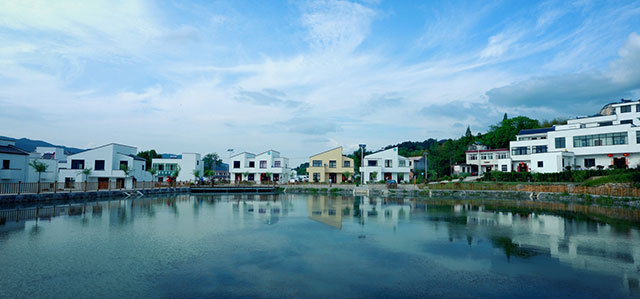
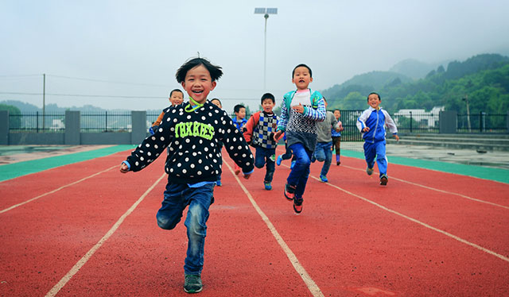
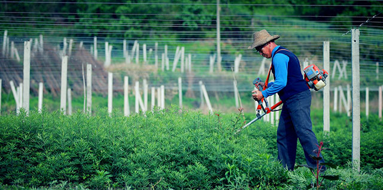

希望小镇
首页 – 企业责任 – 希望小镇
创建华润希望小镇，是华润集团利用企业资源解决"三农"问题，积极参与社会主义新农村建设和 城镇化建设的一次有益探索和尝试。自2008年起，华润陆续在革命老区和贫困地区选址建设希望小镇。 通过统一规划，就地改造、重建，彻底改变农民的居住环境，同时利用集团自身的产业和资源优势，帮 助农民成立专业合作社，发展新型农村集体经济，把华润希望小镇建设成为生态、有机、绿色，和当地 自然环境保持和谐一致，具有农业发展活力、鲜明地方和民族特色的社会主义新村镇。
经过持续八年的努力，迄今，华润已建成广西百色、河北西柏坡、湖南韶山、福建古田、贵州遵义、 安徽金寨希望小镇；江西井冈山希望小镇也正在建设中。
-

竹根河畔的金寨华润希望小镇，2016年6月正式竣工落成。
-

金寨华润希望小镇希望小学。
-

金寨华润希望小镇猕猴桃种植基地。
小镇建设模式
环境改造
和谐的民居改造："改厨、改水、改房、改厕、改圈、改院"，全面提升民居设施。
齐备的公共配套设施：完善及提升公共配套设施服务并辐射周边乡村，主要包括医疗、教育 配套设施、综合服务中心和农贸市场。
生态环保的市政基础建设：清洁能源、污水处理、太阳能、强弱电改造、道路硬化、清洁饮水、照明、环境美化工程等。
产业帮扶
引导农民成立专业合作总社，搭建产业帮扶平台。
统购统销，引导起步
优化品种，合作经营
土地流转，土地整理
辐射带动，产业发展
组织重塑
通过社区党支部、社区居委会、农民专业合作社交叉任职的方式，实现农村党、政、企三位一体的新型管理模式。
社区居民委员会：突破原有行政管理框架，形成全新的功能齐全的农村社区。
农民专业合作社：部分利润用于小镇集体提留的公共积累，为小镇社区居委会行使行政及公共管理职能提供可靠 的经济基础。
社区党支部：发挥社区党组织在推进社区建设中的领导核心作用，健全各级农村基层党组织。